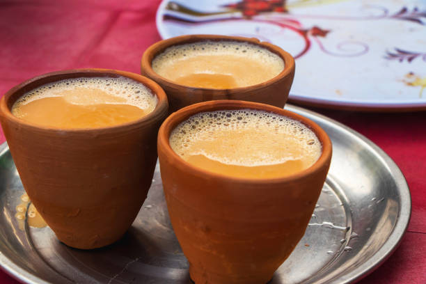

Chai

Description:
The Chai is the Indian version of tea. Its major
ingrdients are tea, milk, and sugar. This hot and sweet beverage
is what an average Indian would love to start their day with.
It is prepared by adding tea leaves in boiling mixture of milk
and water and let it boil for a while.
Ingredients:
- Milk
- Water
- Sugar
- Tea leaves
- Ginger
- Cardamom
Steps:
- Take milk and water half a cup each in a pot.
- Put the pot on the stove and turn the stove on.
- Put some tea leaves in boiling mixture of water and milk.
- Add some sugar.
- Add some crushed ginger and cardamom.
- Let it boil for a while and it's done.